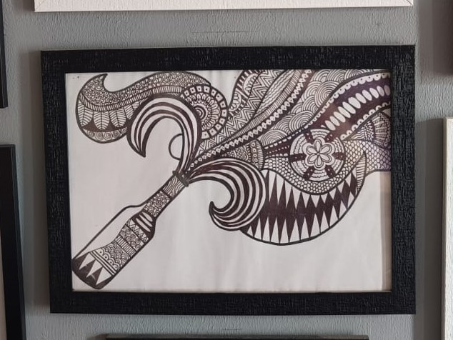

The Art of the Pour

Once, there was a bottle — not of wine, but of stored emotion.
Not corked with fear, but sealed in stillness.
Inside it swirled years of laughter left unsaid,
tears never poured, and moments aged like fine vintage
— waiting for the right time to uncork.
Around it bloomed mandalas — not just patterns,
but maps of the soul, etched layer by layer with the experiences that shaped her.
Each curve told a memory. Each triangle held tension. Each flower was a breath of peace.
The bottle wasn’t broken — it was beautifully full.
Not of something to escape from…
…but something to finally share.
Because when the right soul arrives —
You don’t spill.
You pour with grace.